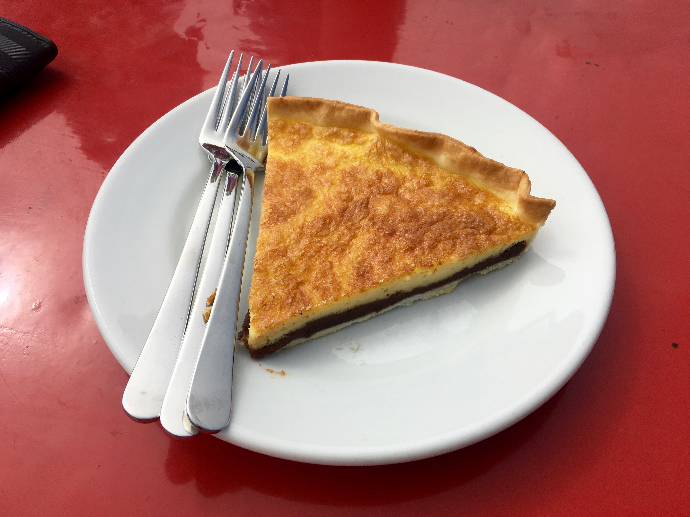

☰
RIEDHIKE
EBENALP - SCHÄFLER - SÄNTIS, APPENZELL
12.09.2020
Difficulty: Hard
Distance: 9.6km
Duration: 4h
Route:
Train to Wasserauen
Cablecar to Ebenalp
Hike: Ebenalp - Schäfler - Säntis
Cablecar to Schwägalp
Postbus to Urnäsch Bahnhof
Ebenalp - 1646m
Schäfler - 1925m

Schlorzifladen (creamy pear flan) at the Berggasthaus Schäfler
You will be taken along diverse landscapes, steep ridges, rocky valleys,
sandy soil and perhaps never ending clouds :)
Säntis - 2502m
Beautiful animal, the alpine Ibex
The final climb up to the Säntis peak (with secure steps and ropes)
Looking back at the hiking trail :) Absolutely worth it!